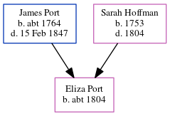

Mercy Keeme (née Port) c1798 - c1839
[ Home ] | [ Calendar ] | [ Surnames Index ] | [ Errors ] | [ Family History ]The child of James Port and Sarah Hoffman, Mercy Port, the four times great-aunt of Nigel Horne, was born c. 1798 and baptised in Herne, Kent, England on 20 Nov 1798. She married James Keeme at St Mary The Virgin, Chislet, Kent, England on 1 Mar 18232.
She died c. Feb 1839 in Blean, Kent, England1.
Parents
- James was born c. 1764
- Sarah was born in 1753
Citations
- England & Wales deaths 1837-2007 - Findmypast
- England Marriages 1538-1973 - Findmypast
Media
England Births & Baptisms 1538-1975 - R_884938918
Kent Baptisms - GBPRS/CANT/B/96579518
England Marriages 1538-1973 - R_848155507/2
Kent marriages and banns - GBPRS/CANT/M/97093654/2
England & Wales Deaths 1837-2007 - BMD-D-1839-1-BN-000976-025
Family Tree
Map
Generated by ged2site. Last updated on Jul 3, 2024
Known Issues
Birth date (abt 1798) has no citations
Date of birth is known, but not place